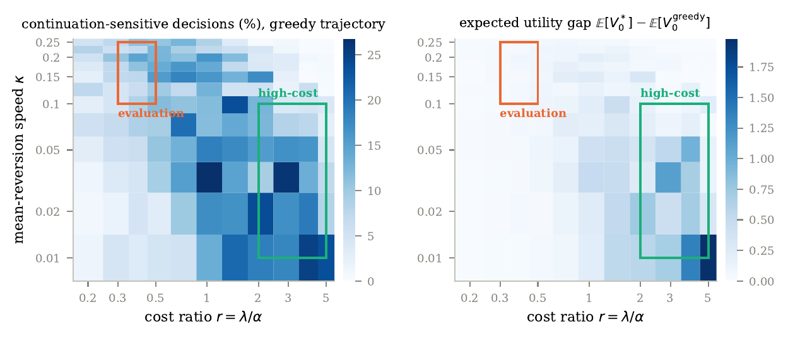

AI · 2026
Verifying Decisions Under Uncertainty
A value-aware evaluation framework for sequential language-model agentsEach decision a language-model agent makes is scored against the exact Bellman-optimal policy of a stochastic control problem from quantitative finance — separating the decisions where planning ahead changes the answer from those where it does not.
LLM evaluation · Stochastic control · Python Paper ↗︎Code ↗︎